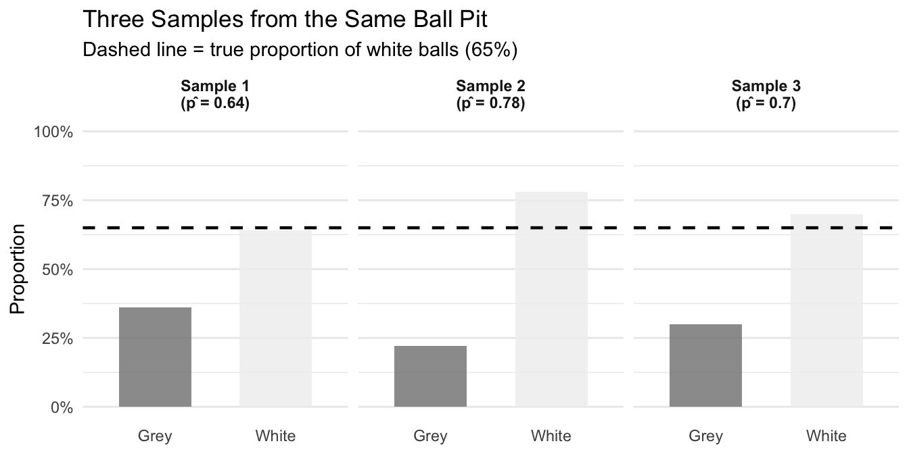
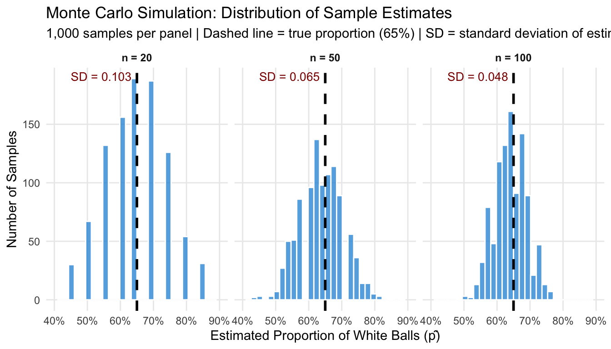
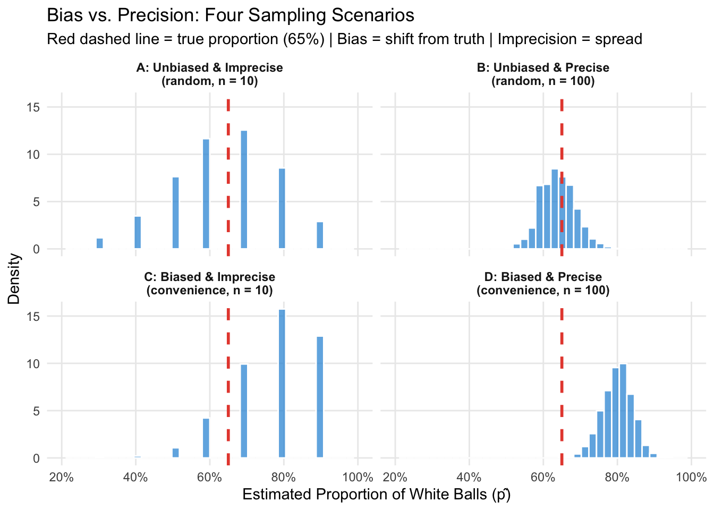
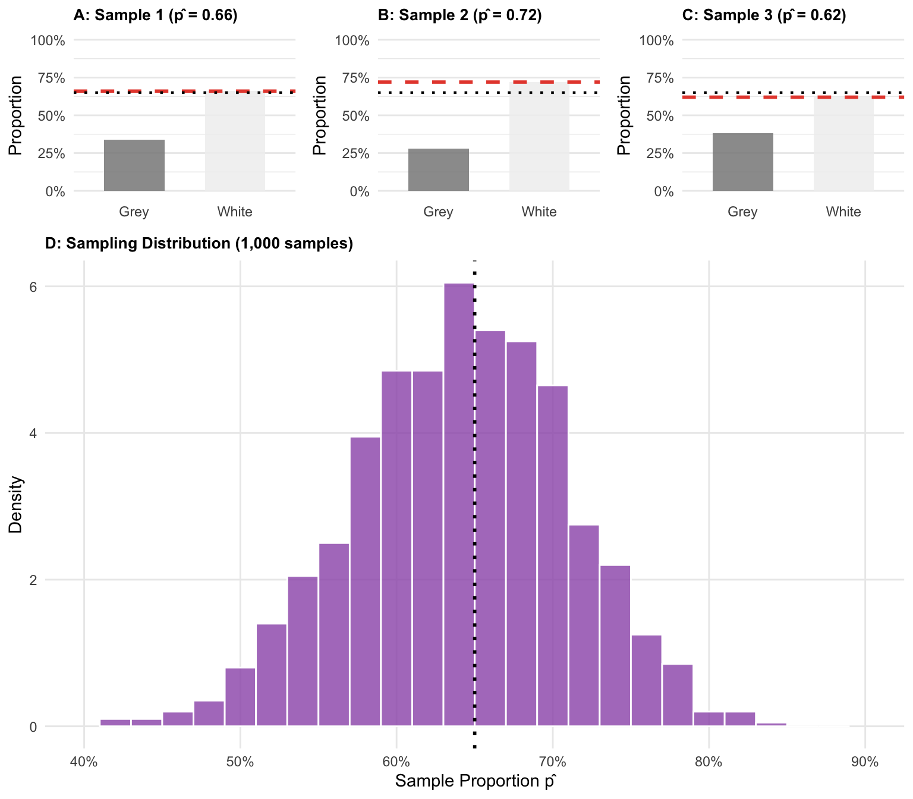
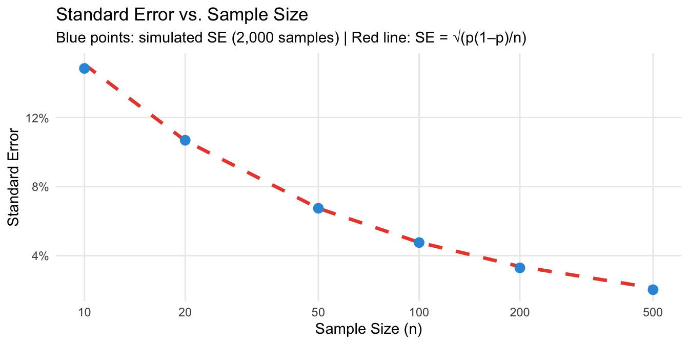
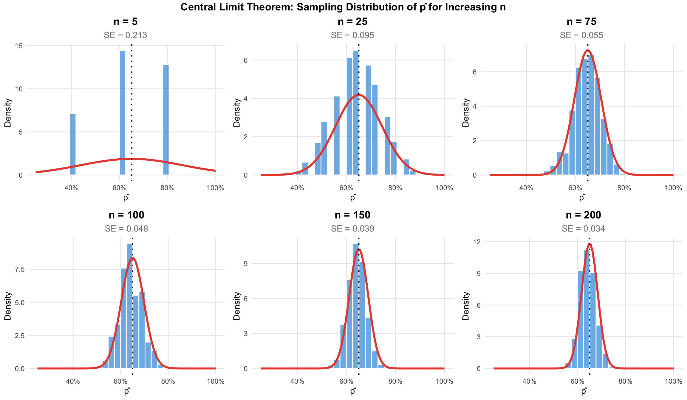
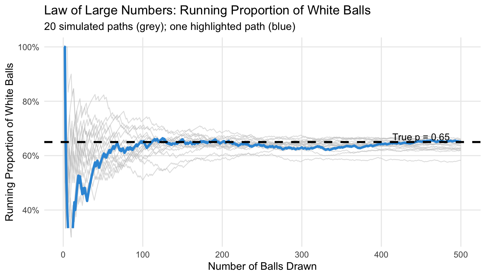
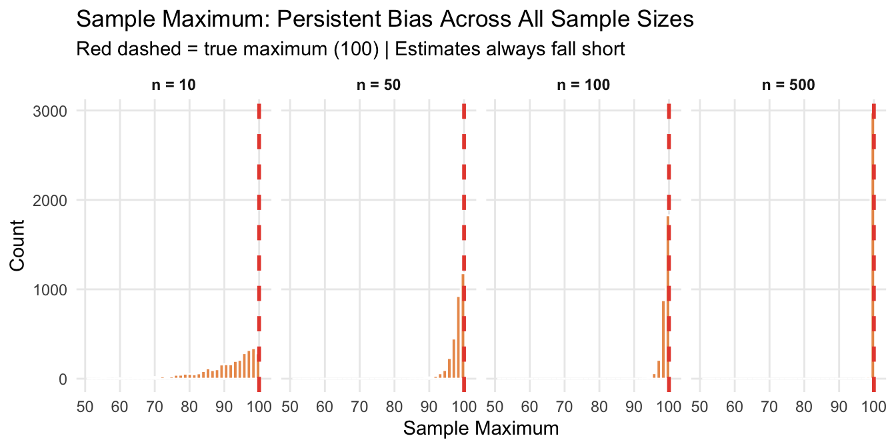

Packages used for R examples
library(ggplot2)
library(dplyr)
library(tidyr)
library(ggpubr)Claudius Gräbner-Radkowitsch
June 15, 2026
June 15, 2026
This page is part of the Statistics Recap track.
Previous resource: Essentials of Probability Theory for Statistics
Next resource: Hypothesis Testing and Confidence Intervals
Before we can understand how to make inferences from samples to populations, we need to establish some fundamental terminology and understand why this process is both necessary and challenging. This page builds on Descriptive Statistics and Essentials of Probability Theory to make the leap from describing data we have collected to drawing conclusions about data we have not — or cannot — collect.
A population is the complete collection of all individuals, objects, or measurements that are of interest to us in a particular study. The population size is denoted by \(N\). A population parameter is any statistical property of the population we want to know — the true mean, proportion, or standard deviation.
A census is the process of collecting data from every single member of the population to determine the population parameter exactly. In practice, a census is usually impossible.
A sample is a subset of the population that we actually study. When elements of the sample are selected randomly, we call it a random sample. The sample size is denoted by \(n < N\).
A point estimate or sample statistic is a value computed from our sample that we use to estimate the corresponding population parameter. We write it with a hat: \(\hat{p}\) for an estimated proportion, \(\hat{\mu}\) for an estimated mean.
A sampling distribution is the distribution of a point estimate across many repeated samples. It formalises the effect of sample variation — the fact that different samples give different estimates.
A standard error is the standard deviation of a sampling distribution. It measures how precise our estimator is.
The act of using sample statistics to draw conclusions about population parameters is called statistical inference.
Imagine you have bought a ball pit for a children’s party. The seller tells you it contains 5,000 balls — a mix of grey and white. You want to know: what proportion of the balls are white?
In principle, you could count every ball — but with 5,000 balls, that is tedious and time-consuming. A much better strategy: take a sample of 50 balls, count the white ones, and use this as an estimate.
Here are the most important terms we will use in the upcoming discussion:
Now suppose we draw 50 balls and find that 32 are white. Our estimate is \(\hat{p} = 32/50 = 0.64\), or 64%. Does this mean exactly 64% of all 5,000 balls are white? Almost certainly not. This is a useful guess, but it is subject to sampling variation — if we put the balls back and drew another 50, we would almost certainly get a different number.
Figure 1 shows draws of three independent samples of 50 balls from the same ball pit and records the proportion of white balls in each.
set.seed(42)
N <- 5000
true_p <- 0.65
biased_p <- 0.80 # proportion in the convenience-sampled corner of the pit
population <- sample(
c("White", "Grey"), N, replace = TRUE,
prob = c(true_p, 1 - true_p)
)
draw_sample <- function(pop, n, id) {
s <- sample(pop, n, replace = FALSE)
tibble(
sample_id = paste0("Sample ", id, "\n(p̂ = ", round(mean(s == "White"), 2), ")"),
color = c("White", "Grey"),
proportion = c(mean(s == "White"), mean(s == "Grey"))
)
}
three_samples <- bind_rows(
draw_sample(population, 50, 1),
draw_sample(population, 50, 2),
draw_sample(population, 50, 3)
)
ggplot(three_samples, aes(x = color, y = proportion, fill = color)) +
geom_col(width = 0.6, alpha = 0.85) +
geom_hline(
data = filter(three_samples, color == "White"),
aes(yintercept = true_p),
linetype = "dashed", color = "black", linewidth = 0.8
) +
facet_wrap(~sample_id, ncol = 3) +
scale_fill_manual(values = c("White" = "#f0f0f0", "Grey" = "#888888"),
guide = "none") +
scale_y_continuous(labels = scales::percent_format(), limits = c(0, 1)) +
labs(
title = "Three Samples from the Same Ball Pit",
subtitle = "Dashed line = true proportion of white balls (65%)",
x = NULL, y = "Proportion"
) +
theme_minimal() +
theme(strip.text = element_text(face = "bold"),
panel.grid.major.x = element_blank())
Each sample gives a different estimate. This is not a problem with our sampling — it is an inevitable consequence of random sampling. It is called sample variation, and the central goal of inferential statistics is to quantify and account for it.
In our ball pit example, random sampling was a convenient option. In reality, there is often no other option to study certain phenomena differently. Among the many reasons for this, the following stand out:
Time and cost: studying entire populations often requires prohibitive resources. Surveying every customer of a multinational company would take years and cost millions.
Accessibility: many populations are impossible to reach completely. You cannot survey every person who might potentially buy your product in the future.
Destructive testing: measuring some properties destroys the object being measured (battery life, material strength, food quality). A census would leave nothing to sell.
Dynamic populations: most populations change constantly. By the time you finish studying everyone, the composition may have shifted.
The way we select our sample affects how well we can generalize to the population. The most important distinction is between methods that are random and those that are not.
Simple random sampling gives every member of the population an equal chance of being selected. This minimizes bias and is the gold standard for producing generalizable results. In the ball pit setting: draw balls blindly one by one.
Stratified sampling divides the population into meaningful groups (strata) and samples randomly from each. Useful when you want to ensure subgroups are represented — for example, sampling balls from different regions of the pit if balls tend to cluster by color.
Systematic sampling selects every \(k\)-th item from a list. Efficient in practice but can introduce bias if the list has a hidden periodic pattern.
Convenience sampling selects whoever is easy to reach. Common in practice but often introduces severe bias. A famous cautionary example: the 1936 Literary Digest poll predicted Alf Landon would defeat Franklin Roosevelt based on responses from telephone directories and car registrations — systematically missing poorer voters who couldn’t afford phones or cars.
In many cases, random sampling is the best option. But there are also argument for stratified or systematic sampling in some well defined context. But no matter what: these alternatives must be very well justified, because there is an important key principle to be kept in mind: no statistical technique can fully correct for a biased sampling method. The foundation of good inference is a representative sample.
In reality, we draw one sample from a population whose true parameters we do not know. How can we understand the properties of sampling variation — how large it is, what determines it — if we only have one sample? The honest answer is: we can’t!1 But there is an excellent alternative: Monte Carlo simulations (MCS).
In a MCS we create an artificial population with known properties and draw many samples from it. We study what we can learn from repeated sampling in this controlled setting. If we specify the random processes in a way that mimick the collection of the sample in a real-world context, then the conclusions of these simulations carry over to real-world situations.
| Reality | Simulation | |
|---|---|---|
| Population properties | Unknown | Known |
| Number of samples | One | Many |
Lets get back to our ball pit setting: we set up an artificial ball pit with a known true proportion (we choose \(p = 0.65\)), draw 1,000 samples, and record the proportion of white balls in each one. Figure 2 shows the results.
set.seed(123)
mcs_results <- bind_rows(lapply(c(20, 50, 100), function(sn) {
tibble(
n = paste0("n = ", sn),
estimate = replicate(1000, mean(sample(population, sn, replace = FALSE) == "White"))
)
})) |>
mutate(n = factor(n, levels = c("n = 20", "n = 50", "n = 100")))
mcs_summary <- mcs_results |>
group_by(n) |>
summarise(mean_est = mean(estimate), sd_est = round(sd(estimate), 3), .groups = "drop")
ggplot(mcs_results, aes(x = estimate)) +
geom_histogram(bins = 30, fill = "#3498db", color = "white", alpha = 0.8) +
geom_vline(xintercept = true_p, linetype = "dashed", linewidth = 1, color = "black") +
geom_text(
data = mcs_summary,
aes(x = 0.45, y = Inf, label = paste0("SD = ", sd_est)),
vjust = 1.5, hjust = 0, size = 3.5, color = "darkred"
) +
facet_wrap(~n, ncol = 3) +
scale_x_continuous(labels = scales::percent_format(), limits = c(0.4, 0.9)) +
labs(
title = "Monte Carlo Simulation: Distribution of Sample Estimates",
subtitle = "1,000 samples per panel | Dashed line = true proportion (65%) | SD = standard deviation of estimates",
x = "Estimated Proportion of White Balls (p̂)", y = "Number of Samples"
) +
theme_minimal() +
theme(strip.text = element_text(face = "bold"), panel.grid.minor = element_blank())
Two takeaways stand out from Figure 2:
These two properties have precise names, and naming them matters: they diagnose different problems and have different remedies. To make this precise, we need to introduce two central concepts of inferential statistics: bias and precision.
An estimator is unbiased if its expected value equals the true population parameter — that is, if it is correct on average across many repeated samples:
\[E[\hat{p}] = p\]
An estimater that is not unbiased is biased. The MCS visualized in Figure 2 illustrates the concept: all three sampling distributions in Figure 2 are centred on the true value of 65%, regardless of sample size, so all estimators are unbiased. Note that unbiasedness is above all a property of how we sample (randomly, giving every ball an equal chance), not of how large our sample is.
An estimator is precise if its sampling distribution is narrow — if individual estimates cluster tightly around the centre. Precision is measured by the standard error: a smaller SE means a more precise estimator. Unlike bias, precision is controlled by sample size: larger samples give smaller standard errors.
The two properties are independent. An estimator can be:
Figure 3 shows all four cases using the ball pit. The “biased” sampler represents a convenience sample drawn exclusively from a corner of the pit that happens to have 80% white balls — a common situation when sampling is not truly random.
set.seed(99)
n_sim <- 3000
# Biased 'corner' of the pit: biased_p white rather than the true true_p
biased_pop <- sample(c("White", "Grey"), N, replace = TRUE, prob = c(biased_p, 1 - biased_p))
conditions <- list(
list(label = "A: Unbiased & Imprecise\n(random, n = 10)",
fn = function() mean(sample(population, 10, replace = FALSE) == "White")),
list(label = "B: Unbiased & Precise\n(random, n = 100)",
fn = function() mean(sample(population, 100, replace = FALSE) == "White")),
list(label = "C: Biased & Imprecise\n(convenience, n = 10)",
fn = function() mean(sample(biased_pop, 10, replace = FALSE) == "White")),
list(label = "D: Biased & Precise\n(convenience, n = 100)",
fn = function() mean(sample(biased_pop, 100, replace = FALSE) == "White"))
)
sim_bp <- bind_rows(lapply(conditions, function(cond) {
tibble(condition = cond$label,
estimate = replicate(n_sim, cond$fn()))
})) |>
mutate(condition = factor(condition, levels = sapply(conditions, `[[`, "label")))
ggplot(sim_bp, aes(x = estimate)) +
geom_histogram(aes(y = after_stat(density)), bins = 40,
fill = "#3498db", color = "white", alpha = 0.75) +
geom_vline(xintercept = true_p,
linetype = "dashed", color = "#e74c3c", linewidth = 1) +
facet_wrap(~condition, ncol = 2) +
scale_x_continuous(labels = scales::percent_format(), limits = c(0.2, 1.0)) +
labs(
title = "Bias vs. Precision: Four Sampling Scenarios",
subtitle = "Red dashed line = true proportion (65%) | Bias = shift from truth | Imprecision = spread",
x = "Estimated Proportion of White Balls (p̂)", y = "Density"
) +
theme_minimal() +
theme(strip.text = element_text(face = "bold"),
panel.grid.minor = element_blank())
The practical implication is crucial: bias and precision require different remedies.
This asymmetry explains why statisticians are so insistent on random sampling: even a massive convenience sample (panel D) will consistently estimate the wrong value.
What we studied in the Monte Carlo simulation — the distribution of estimates across many repeated samples — is called the sampling distribution of the estimator.
Figure 4 makes this concrete. It shows three individual samples from the ball pit (each giving its own estimate \(\hat{p}\)) alongside the full sampling distribution from 1,000 repetitions.2
set.seed(77)
n_sample <- 50
n_reps <- 1000
three_raw <- lapply(1:3, function(i) {
s <- sample(population, n_sample, replace = FALSE)
p_hat <- mean(s == "White")
tibble(
panel = paste0("Sample ", i, " (p̂ = ", round(p_hat, 2), ")"),
color = s
)
})
all_estimates <- replicate(n_reps, mean(sample(population, n_sample, replace = FALSE) == "White"))
make_bar_plot <- function(df, label) {
p_hat <- mean(df$color == "White")
props <- df |> count(color) |> mutate(prop = n / sum(n))
ggplot(props, aes(x = color, y = prop, fill = color)) +
geom_col(width = 0.6, alpha = 0.85) +
geom_hline(yintercept = p_hat, color = "#e74c3c", linetype = "dashed", linewidth = 1) +
geom_hline(yintercept = true_p, color = "black", linetype = "dotted", linewidth = 0.8) +
scale_fill_manual(values = c("White" = "#f0f0f0", "Grey" = "#888888"), guide = "none") +
scale_y_continuous(labels = scales::percent_format(), limits = c(0, 1)) +
labs(title = label, x = NULL, y = "Proportion") +
theme_minimal() +
theme(plot.title = element_text(size = 10, face = "bold"),
panel.grid.major.x = element_blank())
}
p1 <- make_bar_plot(three_raw[[1]], paste0("A: Sample 1 (p̂ = ", round(mean(three_raw[[1]]$color == "White"), 2), ")"))
p2 <- make_bar_plot(three_raw[[2]], paste0("B: Sample 2 (p̂ = ", round(mean(three_raw[[2]]$color == "White"), 2), ")"))
p3 <- make_bar_plot(three_raw[[3]], paste0("C: Sample 3 (p̂ = ", round(mean(three_raw[[3]]$color == "White"), 2), ")"))
p4 <- ggplot(tibble(x = all_estimates), aes(x = x)) +
geom_histogram(aes(y = after_stat(density)), bins = 26,
fill = "#9b59b6", color = "white", alpha = 0.8) +
geom_vline(xintercept = true_p, linetype = "dotted", linewidth = 1, color = "black") +
scale_x_continuous(labels = scales::percent_format(), limits = c(0.4, 0.9)) +
labs(
title = "D: Sampling Distribution (1,000 samples)",
x = "Sample Proportion p̂", y = "Density"
) +
theme_minimal() +
theme(plot.title = element_text(size = 10, face = "bold"),
panel.grid.minor = element_blank())
ggarrange(
ggarrange(p1, p2, p3, ncol = 3),
p4,
nrow = 2, heights = c(1, 2.5)
)
The standard error (SE) of a point estimate is the standard deviation of its sampling distribution. It measures how much our estimate typically varies from sample to sample.
For estimating a proportion \(p\) from a sample of size \(n\), the standard error is:
\[SE = \sqrt{\frac{p(1-p)}{n}}\]
Using our true proportion \(p = 0.65\) and sample sizes of 20, 50, and 100:
\[SE_{20} = \sqrt{\frac{0.65 \times 0.35}{20}} \approx 0.107 \qquad SE_{50} \approx 0.067 \qquad SE_{100} \approx 0.048\]
These match very closely what we observed in the Monte Carlo simulation (the SDs shown in Figure 2): the larger the sample, the smaller the standard error. In fact, the formula above even shows how sample size relates to efficiency: to halve the standard error, you need to quadruple the sample size (see also Figure 5).
set.seed(42)
sample_sizes <- c(10, 20, 50, 100, 200, 500)
se_results <- bind_rows(lapply(sample_sizes, function(sn) {
estimates <- replicate(2000, mean(sample(population, sn, replace = FALSE) == "White"))
tibble(
n = sn,
simulated_se = sd(estimates),
theoretical_se = sqrt(true_p * (1 - true_p) / sn)
)
}))
ggplot(se_results, aes(x = n)) +
geom_line(aes(y = theoretical_se), color = "#e74c3c", linewidth = 1.2, linetype = "dashed") +
geom_point(aes(y = simulated_se), color = "#3498db", size = 3) +
labs(
title = "Standard Error vs. Sample Size",
subtitle = "Blue points: simulated SE (2,000 samples) | Red line: SE = √(p(1–p)/n)",
x = "Sample Size (n)", y = "Standard Error"
) +
scale_x_log10(breaks = sample_sizes, labels = sample_sizes) +
scale_y_continuous(labels = scales::percent_format()) +
theme_minimal() +
theme(panel.grid.minor = element_blank())
The Central Limit Theorem (CLT) is perhaps the most important result in statistics. It states that:
When a sample becomes larger, its sampling distribution becomes narrower and more normally distributed, regardless of the distribution of the population.
This is remarkable. The balls in our ball pit are either white or grey — a binary variable that is clearly not normally distributed. Yet the sample proportion \(\hat{p}\) — computed from many such 0/1 values — follows a normal distribution as \(n\) grows.
The CLT is what makes statistical inference generally possible. It tells us that the point estimate based on our single sample can be treated as a draw from a normal distribution with:
set.seed(42)
sample_sizes_clt <- c(5, 25, 75, 100, 150, 200)
n_reps_clt <- 3000
plots_clt <- lapply(sample_sizes_clt, function(sn) {
estimates <- replicate(n_reps_clt, mean(sample(population, sn, replace = FALSE) == "White"))
se_n <- sqrt(true_p * (1 - true_p) / sn)
ggplot(tibble(x = estimates), aes(x = x)) +
geom_histogram(aes(y = after_stat(density)), bins = 30,
fill = "#3498db", color = "white", alpha = 0.7) +
stat_function(fun = dnorm, args = list(mean = true_p, sd = se_n),
color = "#e74c3c", linewidth = 1.2) +
geom_vline(xintercept = true_p, linetype = "dotted", color = "black", linewidth = 0.8) +
scale_x_continuous(labels = scales::percent_format(), limits = c(0.25, 1)) +
labs(
title = paste0("n = ", sn),
subtitle = paste0("SE = ", round(se_n, 3)),
x = "p̂", y = "Density"
) +
theme_minimal() +
theme(plot.title = element_text(face = "bold", hjust = 0.5),
plot.subtitle = element_text(hjust = 0.5, color = "gray50"),
panel.grid.minor = element_blank())
})
annotate_figure(
ggarrange(plotlist = plots_clt, ncol = 3, nrow = 2),
top = text_grob(
"Central Limit Theorem: Sampling Distribution of p̂ for Increasing n",
face = "bold", size = 13
)
)
This becomes clear from Figure 6. The CLT is why we can use normal distribution tools (like confidence intervals and hypothesis tests) for samples from populations that are not themselves normally distributed — as long as the sample is large enough.
When does “large enough” apply? A common rule of thumb is \(n \geq 30\) for means. For proportions, the condition \(np \geq 10\) and \(n(1-p) \geq 10\) is often used. These are guidelines, not strict thresholds, and the cautionary examples below show the CLT can fail for certain types of statistics.
The Law of Large Numbers, which is visualized in Figure 7, states that – if certain conditions are met – an increase in sample size comes with a convergence of sample statistics to the true population parameter. This is not just intuition — it is a mathematical guarantee that is incredibly important for statistical practice.
set.seed(123)
max_n <- 500
n_paths <- 20
paths <- bind_rows(lapply(1:n_paths, function(i) {
draws <- as.integer(sample(population, max_n, replace = FALSE) == "White")
tibble(
n = 1:max_n,
running_prop = cumsum(draws) / (1:max_n),
path = i
)
}))
main_path <- filter(paths, path == 1)
ggplot(paths, aes(x = n, y = running_prop, group = path)) +
geom_line(color = "gray80", linewidth = 0.4, alpha = 0.6) +
geom_line(data = main_path, color = "#3498db", linewidth = 1.2) +
geom_hline(yintercept = true_p, linetype = "dashed", color = "black", linewidth = 1) +
annotate("text", x = 450, y = true_p + 0.02,
label = paste0("True p = ", true_p), color = "black", size = 3.5) +
scale_y_continuous(labels = scales::percent_format(), limits = c(0.3, 1)) +
labs(
title = "Law of Large Numbers: Running Proportion of White Balls",
subtitle = "20 simulated paths (grey); one highlighted path (blue)",
x = "Number of Balls Drawn", y = "Running Proportion of White Balls"
) +
theme_minimal() +
theme(panel.grid.minor = element_blank())
But one important implication of the LLN is easy to misunderstand: the convergence does not mean that individual samples get less variable as \(n\) grows. Each new ball drawn is just as random as the first. What changes is that the running average is computed over an increasingly large number of draws, so random fluctuations average out. For us this means that even with a very large sample, there is no guarantee that our estimate is close to the true parameter – but it is much more likely if compared to a smaller sample.
“A larger sample is always better.” This of course depense on what you mean by ‘better’, but there is certainly a point of diminishing returns. While larger samples always improve the precision of your estimator, the improvement from \(n = 100\) to \(n = 200\) is much larger than from \(n = 1900\) to \(n = 2000\). In practice, doubling the precision of an estimate requires quadrupling the sample size — not always worth the cost.
“Random sampling guarantees representativeness.” Random sampling minimizes bias and makes representativeness probable, but does not guarantee any specific sample is perfectly representative. What it guarantees is that, on average across many possible samples, estimates are unbiased.
“The CLT means all sampling distributions are normal.” The CLT applies to sample means and proportions from large-enough samples, not to arbitrary statistics or small samples. The sample maximum is a classic counterexample: it is a biased estimator for the population maximum, and increasing the sample size reduces but never eliminates this bias.
set.seed(42)
true_max <- 100
n_reps_mx <- 3000
max_results <- bind_rows(lapply(c(10, 50, 100, 500), function(sn) {
tibble(
n = paste0("n = ", sn),
max_est = replicate(n_reps_mx, max(runif(sn, min = 0, max = true_max)))
)
})) |>
mutate(n = factor(n, levels = paste0("n = ", c(10, 50, 100, 500))))
ggplot(max_results, aes(x = max_est)) +
geom_histogram(bins = 40, fill = "#e67e22", color = "white", alpha = 0.8) +
geom_vline(xintercept = true_max,
linetype = "dashed", color = "#e74c3c", linewidth = 1) +
facet_wrap(~n, ncol = 4, scales = "fixed") +
scale_x_continuous(limits = c(50, 101)) +
labs(
title = "Sample Maximum: Persistent Bias Across All Sample Sizes",
subtitle = "Red dashed = true maximum (100) | Estimates always fall short",
x = "Sample Maximum", y = "Count"
) +
theme_minimal() +
theme(strip.text = element_text(face = "bold"),
panel.grid.minor = element_blank())
“Statistical techniques can fix biased sampling.” No amount of sophisticated statistics can recover information that was never collected. If you only drew balls from one corner of the pit, no statistical adjustment tells you about the rest.
Track overview: A Recap of Undergraduate Statistics · Next in the track: Hypothesis Testing and Confidence Intervals
Well, this is not fully correct. There are tools such as re-sampling that are useful in this context, but they go beyond the scope of this tutorial.↩︎
Note that in reality, we draw only one sample. We never directly observe the sampling distribution. Its properties are theoretical — but the CLT (below) tells us what it looks like.↩︎
@misc{gräbner-radkowitsch2026,
author = {Gräbner-Radkowitsch, Claudius},
editor = {Gräbner-Radkowitsch, Claudius},
title = {Sampling and {Statistical} {Inference}},
date = {2026-06-15},
url = {https://euf-methodology-hub.netlify.app/resources/statistics/sampling-and-inference},
langid = {en}
}
---
title: "Sampling and Statistical Inference"
description: "How we move from sample statistics to conclusions about populations: sampling variability, Monte Carlo simulation, sampling distributions, standard error, the Central Limit Theorem, and the Law of Large Numbers."
author: "Claudius Gräbner-Radkowitsch"
date: 2026-06-15
date-modified: 2026-06-15
image: ../../assets/images/statistics.png
learning-objectives:
- "Distinguish population parameters from sample statistics and explain why sampling variability makes inference necessary"
- "Explain what a Monte Carlo simulation is and use it to study the effect of sample size on estimation precision"
- "Describe what a sampling distribution is and explain why it differs from the distribution of the sample data"
- "Explain the Central Limit Theorem and demonstrate it through simulation in R"
- "Calculate standard error and interpret it as a measure of estimator precision"
- "Distinguish between bias and precision as properties of estimators, and explain which is controlled by sampling method and which by sample size"
categories:
- statistics
- R
- BA
- MA
- reading
level:
- BA
- MA
content-type: reading
citation:
type: entry
container-title: "Methods Hub"
title: "Sampling and Statistical Inference"
editor:
- name: "Claudius Gräbner-Radkowitsch"
url: https://euf-methodology-hub.netlify.app/resources/statistics/sampling-and-inference
---
::: {.callout-note collapse="true"}
## Part of the Statistics Recap Track
This page is part of the [Statistics Recap track](../../tracks/statistics-recap.qmd).
**Previous resource:** [Essentials of Probability Theory for Statistics](probability-theory-essentials.qmd)
**Next resource:** [Hypothesis Testing and Confidence Intervals](hypothesis-testing-and-confidence-intervals.qmd)
:::
```{r}
#| code-summary: "Packages used for R examples"
#| message: false
#| warning: false
library(ggplot2)
library(dplyr)
library(tidyr)
library(ggpubr)
```
# Introduction: A Bridge to Inference
Before we can understand how to make inferences from samples to populations, we need to establish some fundamental terminology and understand why this process is both necessary and challenging. This page builds on [Descriptive Statistics](descriptive-statistics.qmd) and [Essentials of Probability Theory](probability-theory-essentials.qmd) to make the leap from describing data we have collected to drawing conclusions about data we have not — or cannot — collect.
## Essential Terminology
**A population** is the complete collection of all individuals, objects, or measurements that are of interest to us in a particular study. The **population size** is denoted by $N$. A **population parameter** is any statistical property of the population we want to know — the true mean, proportion, or standard deviation.
**A census** is the process of collecting data from every single member of the population to determine the population parameter exactly. In practice, a census is usually impossible.
**A sample** is a subset of the population that we actually study. When elements of the sample are selected randomly, we call it a **random sample**. The **sample size** is denoted by $n < N$.
A **point estimate** or **sample statistic** is a value computed from our sample that we use to estimate the corresponding population parameter. We write it with a hat: $\hat{p}$ for an estimated proportion, $\hat{\mu}$ for an estimated mean.
A **sampling distribution** is the distribution of a point estimate across many repeated samples. It formalises the effect of **sample variation** — the fact that different samples give different estimates.
A **standard error** is the standard deviation of a sampling distribution. It measures how precise our estimator is.
The act of using sample statistics to draw conclusions about population parameters is called **statistical inference**.
# A Motivating Example: The Ball Pit
## Setting Up the Problem
Imagine you have bought a ball pit for a children's party. The seller tells you it contains **5,000 balls** — a mix of grey and white. You want to know: what proportion of the balls are white?
In principle, you could count every ball — but with 5,000 balls, that is tedious and time-consuming. A much better strategy: take a **sample** of 50 balls, count the white ones, and use this as an estimate.
Here are the most important terms we will use in the upcoming discussion:
- **Population**: all 5,000 balls in the ball pit ($N = 5000$)
- **Population parameter**: the true proportion of white balls $p$ (unknown)
- **Sample**: 50 balls drawn at random ($n = 50$)
- **Point estimate**: the proportion of white balls in our sample $\hat{p}$
## Many Samples — Many Estimates
Now suppose we draw 50 balls and find that 32 are white. Our estimate is $\hat{p} = 32/50 = 0.64$, or 64%. Does this mean exactly 64% of all 5,000 balls are white? Almost certainly not. This is a useful guess, but it is subject to **sampling variation** — if we put the balls back and drew another 50, we would almost certainly get a different number.
@fig-three-samples shows draws of three independent samples of 50 balls from the same ball pit and records the proportion of white balls in each.
```{r}
#| code-summary: "Setting up the ball pit population and drawing three samples"
#| label: fig-three-samples
#| fig-cap: "Three independent samples of 50 balls from the same population — each gives a different estimate of the proportion of white balls. The true proportion is shown as a dashed line."
#| fig-height: 3.5
set.seed(42)
N <- 5000
true_p <- 0.65
biased_p <- 0.80 # proportion in the convenience-sampled corner of the pit
population <- sample(
c("White", "Grey"), N, replace = TRUE,
prob = c(true_p, 1 - true_p)
)
draw_sample <- function(pop, n, id) {
s <- sample(pop, n, replace = FALSE)
tibble(
sample_id = paste0("Sample ", id, "\n(p̂ = ", round(mean(s == "White"), 2), ")"),
color = c("White", "Grey"),
proportion = c(mean(s == "White"), mean(s == "Grey"))
)
}
three_samples <- bind_rows(
draw_sample(population, 50, 1),
draw_sample(population, 50, 2),
draw_sample(population, 50, 3)
)
ggplot(three_samples, aes(x = color, y = proportion, fill = color)) +
geom_col(width = 0.6, alpha = 0.85) +
geom_hline(
data = filter(three_samples, color == "White"),
aes(yintercept = true_p),
linetype = "dashed", color = "black", linewidth = 0.8
) +
facet_wrap(~sample_id, ncol = 3) +
scale_fill_manual(values = c("White" = "#f0f0f0", "Grey" = "#888888"),
guide = "none") +
scale_y_continuous(labels = scales::percent_format(), limits = c(0, 1)) +
labs(
title = "Three Samples from the Same Ball Pit",
subtitle = "Dashed line = true proportion of white balls (65%)",
x = NULL, y = "Proportion"
) +
theme_minimal() +
theme(strip.text = element_text(face = "bold"),
panel.grid.major.x = element_blank())
```
Each sample gives a different estimate. This is not a problem with our sampling — it is an inevitable consequence of random sampling. It is called **sample variation**, and the central goal of inferential statistics is to quantify and account for it.
## Why Sampling?
In our ball pit example, random sampling was a convenient option. In reality, there is often no other option to study certain phenomena differently. Among the many reasons for this, the following stand out:
- **Time and cost**: studying entire populations often requires prohibitive resources. Surveying every customer of a multinational company would take years and cost millions.
- **Accessibility**: many populations are impossible to reach completely. You cannot survey every person who might potentially buy your product in the future.
- **Destructive testing**: measuring some properties destroys the object being measured (battery life, material strength, food quality). A census would leave nothing to sell.
- **Dynamic populations**: most populations change constantly. By the time you finish studying everyone, the composition may have shifted.
## Sampling Methods
The way we select our sample affects how well we can generalize to the population. The most important distinction is between methods that are *random* and those that are not.
- **Simple random sampling** gives every member of the population an equal chance of being selected. This minimizes bias and is the gold standard for producing generalizable results. In the ball pit setting: draw balls blindly one by one.
- **Stratified sampling** divides the population into meaningful groups (strata) and samples randomly from each. Useful when you want to ensure subgroups are represented — for example, sampling balls from different regions of the pit if balls tend to cluster by color.
- **Systematic sampling** selects every $k$-th item from a list. Efficient in practice but can introduce bias if the list has a hidden periodic pattern.
- **Convenience sampling** selects whoever is easy to reach. Common in practice but often introduces severe bias. A famous cautionary example: the 1936 *Literary Digest* poll predicted Alf Landon would defeat Franklin Roosevelt based on responses from telephone directories and car registrations — systematically missing poorer voters who couldn't afford phones or cars.
In many cases, random sampling is the best option. But there are also argument for stratified or systematic sampling in some well defined context. But no matter what: these alternatives must be very well justified, because there is an important key principle to be kept in mind: **no statistical technique can fully correct for a biased sampling method.** The foundation of good inference is a representative sample.
# Monte Carlo Simulations: Studying Sample Variation Systematically
In reality, we draw **one** sample from a population whose true parameters we do not know. How can we understand the properties of sampling variation — how large it is, what determines it — if we only have one sample? The honest answer is: we can't!^[Well, this is not fully correct. There are tools such as re-sampling that are useful in this context, but they go beyond the scope of this tutorial.] But there is an excellent alternative: **Monte Carlo simulations** (MCS).
In a MCS we create an *artificial* population with *known* properties and draw *many* samples from it. We study what we can learn from repeated sampling in this controlled setting. If we specify the random processes in a way that mimick the collection of the sample in a real-world context, then the conclusions of these simulations carry over to real-world situations.
| | Reality | Simulation |
|---|---|---|
| Population properties | Unknown | Known |
| Number of samples | One | Many |
Lets get back to our ball pit setting: we set up an artificial ball pit with a known true proportion (we choose $p = 0.65$), draw 1,000 samples, and record the proportion of white balls in each one. @fig-mcs shows the results.
```{r}
#| code-summary: "Monte Carlo simulation: 1,000 samples for three different sample sizes"
#| label: fig-mcs
#| fig-cap: "Monte Carlo simulation results. Each histogram shows the distribution of 1,000 sample estimates $\\hat{p}$ for a given sample size. The true proportion (65%) is shown as a dashed line. Key takeaways: all three distributions are centred on the true value, but the spread shrinks as n increases."
#| fig-height: 4
#| warning: false
set.seed(123)
mcs_results <- bind_rows(lapply(c(20, 50, 100), function(sn) {
tibble(
n = paste0("n = ", sn),
estimate = replicate(1000, mean(sample(population, sn, replace = FALSE) == "White"))
)
})) |>
mutate(n = factor(n, levels = c("n = 20", "n = 50", "n = 100")))
mcs_summary <- mcs_results |>
group_by(n) |>
summarise(mean_est = mean(estimate), sd_est = round(sd(estimate), 3), .groups = "drop")
ggplot(mcs_results, aes(x = estimate)) +
geom_histogram(bins = 30, fill = "#3498db", color = "white", alpha = 0.8) +
geom_vline(xintercept = true_p, linetype = "dashed", linewidth = 1, color = "black") +
geom_text(
data = mcs_summary,
aes(x = 0.45, y = Inf, label = paste0("SD = ", sd_est)),
vjust = 1.5, hjust = 0, size = 3.5, color = "darkred"
) +
facet_wrap(~n, ncol = 3) +
scale_x_continuous(labels = scales::percent_format(), limits = c(0.4, 0.9)) +
labs(
title = "Monte Carlo Simulation: Distribution of Sample Estimates",
subtitle = "1,000 samples per panel | Dashed line = true proportion (65%) | SD = standard deviation of estimates",
x = "Estimated Proportion of White Balls (p̂)", y = "Number of Samples"
) +
theme_minimal() +
theme(strip.text = element_text(face = "bold"), panel.grid.minor = element_blank())
```
Two takeaways stand out from @fig-mcs:
1. **All three distributions are centred on the true value.** Regardless of sample size, the average of our estimates is close to the true proportion of `r true_p * 100`%. Our estimator is *unbiased*.
2. **The spread shrinks as the sample size increases.** With $n = 20$, estimates vary widely. With $n = 100$, they cluster tightly around the true value. A larger sample gives a more *precise* estimate.
These two properties have precise names, and naming them matters: they diagnose different problems and have different remedies. To make this precise, we need to introduce two central concepts of inferential statistics: bias and precision.
An estimator is **unbiased** if its expected value equals the true population parameter — that is, if it is correct *on average* across many repeated samples:
$$E[\hat{p}] = p$$
An estimater that is not unbiased is biased. The MCS visualized in @fig-mcs illustrates the concept: all three sampling distributions in @fig-mcs are centred on the true value of `r true_p * 100`%, regardless of sample size, so all estimators are unbiased. Note that unbiasedness is above all a property of *how we sample* (randomly, giving every ball an equal chance), not of how large our sample is.
An estimator is **precise** if its sampling distribution is narrow — if individual estimates cluster tightly around the centre. Precision is measured by the standard error: a smaller SE means a more precise estimator. Unlike bias, precision *is* controlled by sample size: larger samples give smaller standard errors.
The two properties are independent. An estimator can be:
- **Unbiased and precise**: random sampling with large $n$ — the ideal.
- **Unbiased but imprecise**: random sampling with small $n$ — correct on average, but individual estimates are scattered.
- **Biased but precise**: systematic convenience sampling with large $n$ — estimates cluster tightly around the *wrong* value.
- **Biased and imprecise**: convenience sampling with small $n$ — wrong and scattered.
@fig-bias-precision shows all four cases using the ball pit. The "biased" sampler represents a convenience sample drawn exclusively from a corner of the pit that happens to have `r biased_p * 100`% white balls — a common situation when sampling is not truly random.
```{r}
#| code-summary: "Bias vs. precision: four sampling scenarios"
#| label: fig-bias-precision
#| fig-cap: "Four combinations of bias and precision. The red dashed line marks the true proportion (65%). Panels A and B use random sampling (unbiased); panels C and D use a convenience sample from a region with 80% white balls (biased). Panels A and C use small samples (n = 10, imprecise); panels B and D use large samples (n = 100, precise). Bias shifts the distribution away from the truth; imprecision spreads it out."
#| fig-height: 5
set.seed(99)
n_sim <- 3000
# Biased 'corner' of the pit: biased_p white rather than the true true_p
biased_pop <- sample(c("White", "Grey"), N, replace = TRUE, prob = c(biased_p, 1 - biased_p))
conditions <- list(
list(label = "A: Unbiased & Imprecise\n(random, n = 10)",
fn = function() mean(sample(population, 10, replace = FALSE) == "White")),
list(label = "B: Unbiased & Precise\n(random, n = 100)",
fn = function() mean(sample(population, 100, replace = FALSE) == "White")),
list(label = "C: Biased & Imprecise\n(convenience, n = 10)",
fn = function() mean(sample(biased_pop, 10, replace = FALSE) == "White")),
list(label = "D: Biased & Precise\n(convenience, n = 100)",
fn = function() mean(sample(biased_pop, 100, replace = FALSE) == "White"))
)
sim_bp <- bind_rows(lapply(conditions, function(cond) {
tibble(condition = cond$label,
estimate = replicate(n_sim, cond$fn()))
})) |>
mutate(condition = factor(condition, levels = sapply(conditions, `[[`, "label")))
ggplot(sim_bp, aes(x = estimate)) +
geom_histogram(aes(y = after_stat(density)), bins = 40,
fill = "#3498db", color = "white", alpha = 0.75) +
geom_vline(xintercept = true_p,
linetype = "dashed", color = "#e74c3c", linewidth = 1) +
facet_wrap(~condition, ncol = 2) +
scale_x_continuous(labels = scales::percent_format(), limits = c(0.2, 1.0)) +
labs(
title = "Bias vs. Precision: Four Sampling Scenarios",
subtitle = "Red dashed line = true proportion (65%) | Bias = shift from truth | Imprecision = spread",
x = "Estimated Proportion of White Balls (p̂)", y = "Density"
) +
theme_minimal() +
theme(strip.text = element_text(face = "bold"),
panel.grid.minor = element_blank())
```
The practical implication is crucial: **bias and precision require different remedies.**
- Bias is eliminated by improving the *sampling method* — switching from convenience to random sampling. No increase in sample size will fix a biased estimator.
- Imprecision is reduced by increasing the *sample size*. A randomly drawn sample of 10 is unbiased but scattered; the same sampling method with $n = 100$ is both unbiased and precise.
This asymmetry explains why statisticians are so insistent on random sampling: even a massive convenience sample (panel D) will consistently estimate the wrong value.
# Sampling Distributions
What we studied in the Monte Carlo simulation — the distribution of estimates across many repeated samples — is called the **sampling distribution** of the estimator.
@fig-sampling-dist makes this concrete. It shows three individual samples from the ball pit (each giving its own estimate $\hat{p}$) alongside the full sampling distribution from 1,000 repetitions.^[Note that in reality, we draw only one sample. We never directly observe the sampling distribution. Its properties are theoretical — but the CLT (below) tells us what it looks like.]
```{r}
#| code-summary: "Three samples alongside the full sampling distribution"
#| label: fig-sampling-dist
#| warning: false
#| fig-cap: "Panels A–C: three individual samples of 50 balls, each with its own proportion estimate (red dashed). Panel D: the sampling distribution — the distribution of all 1,000 sample estimates. In practice, you observe only one sample; the sampling distribution is a theoretical object that tells you how your estimate would vary if you could repeat the process."
#| fig-height: 7
#| fig-width: 8
set.seed(77)
n_sample <- 50
n_reps <- 1000
three_raw <- lapply(1:3, function(i) {
s <- sample(population, n_sample, replace = FALSE)
p_hat <- mean(s == "White")
tibble(
panel = paste0("Sample ", i, " (p̂ = ", round(p_hat, 2), ")"),
color = s
)
})
all_estimates <- replicate(n_reps, mean(sample(population, n_sample, replace = FALSE) == "White"))
make_bar_plot <- function(df, label) {
p_hat <- mean(df$color == "White")
props <- df |> count(color) |> mutate(prop = n / sum(n))
ggplot(props, aes(x = color, y = prop, fill = color)) +
geom_col(width = 0.6, alpha = 0.85) +
geom_hline(yintercept = p_hat, color = "#e74c3c", linetype = "dashed", linewidth = 1) +
geom_hline(yintercept = true_p, color = "black", linetype = "dotted", linewidth = 0.8) +
scale_fill_manual(values = c("White" = "#f0f0f0", "Grey" = "#888888"), guide = "none") +
scale_y_continuous(labels = scales::percent_format(), limits = c(0, 1)) +
labs(title = label, x = NULL, y = "Proportion") +
theme_minimal() +
theme(plot.title = element_text(size = 10, face = "bold"),
panel.grid.major.x = element_blank())
}
p1 <- make_bar_plot(three_raw[[1]], paste0("A: Sample 1 (p̂ = ", round(mean(three_raw[[1]]$color == "White"), 2), ")"))
p2 <- make_bar_plot(three_raw[[2]], paste0("B: Sample 2 (p̂ = ", round(mean(three_raw[[2]]$color == "White"), 2), ")"))
p3 <- make_bar_plot(three_raw[[3]], paste0("C: Sample 3 (p̂ = ", round(mean(three_raw[[3]]$color == "White"), 2), ")"))
p4 <- ggplot(tibble(x = all_estimates), aes(x = x)) +
geom_histogram(aes(y = after_stat(density)), bins = 26,
fill = "#9b59b6", color = "white", alpha = 0.8) +
geom_vline(xintercept = true_p, linetype = "dotted", linewidth = 1, color = "black") +
scale_x_continuous(labels = scales::percent_format(), limits = c(0.4, 0.9)) +
labs(
title = "D: Sampling Distribution (1,000 samples)",
x = "Sample Proportion p̂", y = "Density"
) +
theme_minimal() +
theme(plot.title = element_text(size = 10, face = "bold"),
panel.grid.minor = element_blank())
ggarrange(
ggarrange(p1, p2, p3, ncol = 3),
p4,
nrow = 2, heights = c(1, 2.5)
)
```
# Standard Error: Measuring Estimation Precision
The **standard error** (SE) of a point estimate is the standard deviation of its sampling distribution. It measures how much our estimate typically varies from sample to sample.
For estimating a proportion $p$ from a sample of size $n$, the standard error is:
$$SE = \sqrt{\frac{p(1-p)}{n}}$$
Using our true proportion $p = 0.65$ and sample sizes of 20, 50, and 100:
$$SE_{20} = \sqrt{\frac{0.65 \times 0.35}{20}} \approx 0.107 \qquad SE_{50} \approx 0.067 \qquad SE_{100} \approx 0.048$$
These match very closely what we observed in the Monte Carlo simulation (the SDs shown in @fig-mcs):
the larger the sample, the smaller the standard error.
In fact, the formula above even shows _how_ sample size relates to efficiency:
to halve the standard error, you need to quadruple the sample size (see also @fig-se).
```{r}
#| code-summary: "Standard error: simulated vs. theoretical"
#| label: fig-se
#| fig-cap: "Standard error decreases with sample size. The simulated values (points) from 1,000 repeated samples closely match the theoretical formula (line). Note the diminishing returns: moving from n=20 to n=50 reduces the SE substantially, but moving from n=200 to n=500 gives a much smaller improvement."
#| fig-height: 3.5
set.seed(42)
sample_sizes <- c(10, 20, 50, 100, 200, 500)
se_results <- bind_rows(lapply(sample_sizes, function(sn) {
estimates <- replicate(2000, mean(sample(population, sn, replace = FALSE) == "White"))
tibble(
n = sn,
simulated_se = sd(estimates),
theoretical_se = sqrt(true_p * (1 - true_p) / sn)
)
}))
ggplot(se_results, aes(x = n)) +
geom_line(aes(y = theoretical_se), color = "#e74c3c", linewidth = 1.2, linetype = "dashed") +
geom_point(aes(y = simulated_se), color = "#3498db", size = 3) +
labs(
title = "Standard Error vs. Sample Size",
subtitle = "Blue points: simulated SE (2,000 samples) | Red line: SE = √(p(1–p)/n)",
x = "Sample Size (n)", y = "Standard Error"
) +
scale_x_log10(breaks = sample_sizes, labels = sample_sizes) +
scale_y_continuous(labels = scales::percent_format()) +
theme_minimal() +
theme(panel.grid.minor = element_blank())
```
# The Central Limit Theorem
The **Central Limit Theorem (CLT)** is perhaps the most important result in statistics. It states that:
> *When a sample becomes larger, its sampling distribution becomes narrower and more normally distributed, regardless of the distribution of the population.*
This is remarkable. The balls in our ball pit are either white or grey — a binary variable that is clearly not normally distributed. Yet the sample proportion $\hat{p}$ — computed from many such 0/1 values — follows a normal distribution as $n$ grows.
The CLT is what makes statistical inference generally possible. It tells us that the point estimate based on our single sample can be treated as a draw from a normal distribution with:
- Mean equal to the true population parameter
- Standard deviation equal to the standard error of our estimate
```{r}
#| code-summary: "CLT for proportions: convergence to normal"
#| label: fig-clt
#| fig-cap: "The CLT in action with our ball pit. The population is binary (0/1 — grey or white), clearly not normal. Yet as sample size increases, the sampling distribution of p̂ converges to a normal distribution (red curve). By n=75, the approximation is already very good."
#| fig-height: 7
#| fig-width: 12
#| message: false
#| warning: false
set.seed(42)
sample_sizes_clt <- c(5, 25, 75, 100, 150, 200)
n_reps_clt <- 3000
plots_clt <- lapply(sample_sizes_clt, function(sn) {
estimates <- replicate(n_reps_clt, mean(sample(population, sn, replace = FALSE) == "White"))
se_n <- sqrt(true_p * (1 - true_p) / sn)
ggplot(tibble(x = estimates), aes(x = x)) +
geom_histogram(aes(y = after_stat(density)), bins = 30,
fill = "#3498db", color = "white", alpha = 0.7) +
stat_function(fun = dnorm, args = list(mean = true_p, sd = se_n),
color = "#e74c3c", linewidth = 1.2) +
geom_vline(xintercept = true_p, linetype = "dotted", color = "black", linewidth = 0.8) +
scale_x_continuous(labels = scales::percent_format(), limits = c(0.25, 1)) +
labs(
title = paste0("n = ", sn),
subtitle = paste0("SE = ", round(se_n, 3)),
x = "p̂", y = "Density"
) +
theme_minimal() +
theme(plot.title = element_text(face = "bold", hjust = 0.5),
plot.subtitle = element_text(hjust = 0.5, color = "gray50"),
panel.grid.minor = element_blank())
})
annotate_figure(
ggarrange(plotlist = plots_clt, ncol = 3, nrow = 2),
top = text_grob(
"Central Limit Theorem: Sampling Distribution of p̂ for Increasing n",
face = "bold", size = 13
)
)
```
This becomes clear from @fig-clt. The CLT is why we can use normal distribution tools (like confidence intervals and hypothesis tests) for samples from populations that are not themselves normally distributed — as long as the sample is large enough.
::: {.callout-note}
**When does "large enough" apply?** A common rule of thumb is $n \geq 30$ for means. For proportions, the condition $np \geq 10$ and $n(1-p) \geq 10$ is often used. These are guidelines, not strict thresholds, and the cautionary examples below show the CLT can fail for certain types of statistics.
:::
# The Law of Large Numbers
The **Law of Large Numbers**, which is visualized in @fig-lln, states that -- if certain conditions are met -- an increase in sample size comes with a convergence of sample statistics to the true population parameter. This is not just intuition — it is a mathematical guarantee that is incredibly important for statistical practice.
```{r}
#| code-summary: "Law of Large Numbers: running proportion converging to true proportion"
#| label: fig-lln
#| fig-cap: "The Law of Large Numbers in action. Each line shows the running proportion of white balls as we draw more and more balls from the pit. All paths eventually converge toward the true proportion of 65% (dashed line), but the journey is bumpy for small samples."
#| fig-height: 4
#| warning: false
set.seed(123)
max_n <- 500
n_paths <- 20
paths <- bind_rows(lapply(1:n_paths, function(i) {
draws <- as.integer(sample(population, max_n, replace = FALSE) == "White")
tibble(
n = 1:max_n,
running_prop = cumsum(draws) / (1:max_n),
path = i
)
}))
main_path <- filter(paths, path == 1)
ggplot(paths, aes(x = n, y = running_prop, group = path)) +
geom_line(color = "gray80", linewidth = 0.4, alpha = 0.6) +
geom_line(data = main_path, color = "#3498db", linewidth = 1.2) +
geom_hline(yintercept = true_p, linetype = "dashed", color = "black", linewidth = 1) +
annotate("text", x = 450, y = true_p + 0.02,
label = paste0("True p = ", true_p), color = "black", size = 3.5) +
scale_y_continuous(labels = scales::percent_format(), limits = c(0.3, 1)) +
labs(
title = "Law of Large Numbers: Running Proportion of White Balls",
subtitle = "20 simulated paths (grey); one highlighted path (blue)",
x = "Number of Balls Drawn", y = "Running Proportion of White Balls"
) +
theme_minimal() +
theme(panel.grid.minor = element_blank())
```
But one important implication of the LLN is easy to misunderstand: the convergence does _not_ mean that individual samples get less variable as $n$ grows. Each new ball drawn is just as random as the first. What changes is that the *running average* is computed over an increasingly large number of draws, so random fluctuations average out. For us this means that even with a very large sample, there is no guarantee that our estimate is close to the true parameter -- but it is much more likely if compared to a smaller sample.
# Common Misconceptions
**"A larger sample is always better."** This of course depense on what you mean by 'better', but there is certainly a point of diminishing returns. While larger samples always improve the precision of your estimator, the improvement from $n = 100$ to $n = 200$ is much larger than from $n = 1900$ to $n = 2000$. In practice, doubling the precision of an estimate requires quadrupling the sample size — not always worth the cost.
**"Random sampling guarantees representativeness."** Random sampling minimizes bias and makes representativeness *probable*, but does not guarantee any specific sample is perfectly representative. What it guarantees is that, on average across many possible samples, estimates are unbiased.
**"The CLT means all sampling distributions are normal."** The CLT applies to sample means and proportions from large-enough samples, not to arbitrary statistics or small samples. The sample *maximum* is a classic counterexample: it is a *biased* estimator for the population maximum, and increasing the sample size reduces but never eliminates this bias.
```{r}
#| code-summary: "The sample maximum: a persistently biased estimator"
#| label: fig-sample-max
#| fig-cap: "The sample maximum systematically underestimates the population maximum (dashed line at 100), because any finite sample misses the very largest values. Crucially, this bias shrinks with sample size but never disappears — even at n = 500, estimates cluster around 99.8, not 100. This is a case where the CLT does not rescue us."
#| fig-height: 3.5
set.seed(42)
true_max <- 100
n_reps_mx <- 3000
max_results <- bind_rows(lapply(c(10, 50, 100, 500), function(sn) {
tibble(
n = paste0("n = ", sn),
max_est = replicate(n_reps_mx, max(runif(sn, min = 0, max = true_max)))
)
})) |>
mutate(n = factor(n, levels = paste0("n = ", c(10, 50, 100, 500))))
ggplot(max_results, aes(x = max_est)) +
geom_histogram(bins = 40, fill = "#e67e22", color = "white", alpha = 0.8) +
geom_vline(xintercept = true_max,
linetype = "dashed", color = "#e74c3c", linewidth = 1) +
facet_wrap(~n, ncol = 4, scales = "fixed") +
scale_x_continuous(limits = c(50, 101)) +
labs(
title = "Sample Maximum: Persistent Bias Across All Sample Sizes",
subtitle = "Red dashed = true maximum (100) | Estimates always fall short",
x = "Sample Maximum", y = "Count"
) +
theme_minimal() +
theme(strip.text = element_text(face = "bold"),
panel.grid.minor = element_blank())
```
**"Statistical techniques can fix biased sampling."** No amount of sophisticated statistics can recover information that was never collected. If you only drew balls from one corner of the pit, no statistical adjustment tells you about the rest.
---
**Track overview:** [A Recap of Undergraduate Statistics](../../tracks/statistics-recap.qmd) · **Next in the track:** [Hypothesis Testing and Confidence Intervals](hypothesis-testing-and-confidence-intervals.qmd)
---
# Comments and questions
<script src="https://giscus.app/client.js"
data-repo="graebnerc/research-methodology-hub"
data-repo-id="R_kgDOS7J-4w"
data-category="Comments"
data-category-id="DIC_kwDOS7J-484C_N51"
data-mapping="pathname"
data-strict="0"
data-reactions-enabled="1"
data-emit-metadata="0"
data-input-position="bottom"
data-theme="preferred_color_scheme"
data-lang="en"
crossorigin="anonymous"
async>
</script>
9 Comments and questions